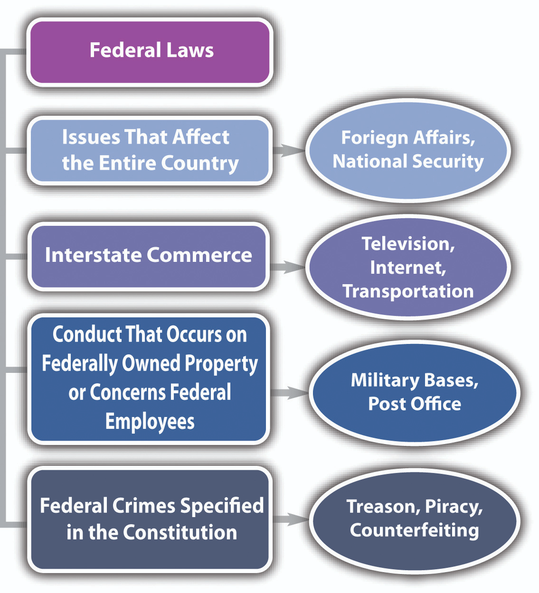

2.1 Federalism
Learning Objectives
- Define federalism.
- Identify the sections of the Constitution that give Congress regulatory authority.>
- Identify the constitutional basis for Congress’s authority to enact criminal laws.>
- Compare federal regulatory authority with state regulatory authority.
- Compare federal criminal laws with state criminal laws.
- Define federal supremacy.
The United States’ system of government is called federalism, a system in which power is divided between a national (federal) government and several state governments. Federalism, as set forth in the U.S. Constitution, divides governmental power between the federal government and each of the states. This prevents a concentrated source of governmental power in one individual or small group of individuals. Because of federalism, the United States has one federal legal system, and each state has its own state legal system. Thus in the United States, a plethora of legal systems all operate simultaneously.
Watch and Learn
Source: Federalism: Crash Course Government and Politics #4 by CrashCourse. (Learn how to access the transcript.)
The Scope of Federal Law¶
The government’s power to regulate comes from the U.S. Constitution. The federal government derives its authority to create law from Article I, § 8, which discusses Congress’s exclusive or delegated powers. These include the power to regulate currency and coin, establish a post office, promote science and art by regulating the rights to discoveries and writings, declare war and raise armies, conduct foreign affairs, regulate interstate and foreign commerce, and make laws necessary and proper to execute other powers expressly granted in the Constitution. Courts have interpreted the latter two powers—which are mentioned in the Constitution’s (a) Commerce Clause, which allows Congress to regulate commerce (economic activity) that crosses state lines, and (b) the Necessary and Proper Clause, which allows Congress to make laws necessary to carry out all powers listed in the Constitution—to be the broadest sources of federal regulatory authority.
To simplify and summarize precedent defining federal regulatory authority, federal laws are meant to regulate in two areas. First, federal laws regulate issues that concern the country, rather than just one city, county, or state. The federal government regulates in the area of foreign affairs, for example, because this affects the United States of America, not just one particular region. Second, federal laws regulate commerce, which is economic activity, that crosses from state to state. Some common examples are television broadcasts, the Internet, and any form of transportation such as the airlines.
Federal Criminal Laws¶
The original intent was for the federal government to be a limited government, with the bulk of regulatory authority residing in the states. The only crimes Congress is specifically authorized to punish are piracies and felonies on the high seas, counterfeiting, and treason; however, case precedent has expanded the federal government’s power to enact criminal laws based on the commerce clause and the necessary and proper clause.McCulloch v. Maryland, 17 U.S. (4 Wheat.) 316 (1819), accessed August 28, 2010, http://www.law.cornell.edu/supct/html/historics/USSCCR00170316ZS.html. Still, there must be some connection to an issue of national character and interstate commerce, or the federal government will overstep its authority. In general, federal criminal laws target conduct that occurs on federal property or conduct involving federal employees, currency, coin, treason, national security, rights secured by the Constitution, or commerce that crosses state lines. Currently, over five hundred crimes are listed in Part I, Title 18 of the United States Code, which codifies criminal laws for the federal government.

Figure 2.1 Diagram of Federal Laws
The Scope of State Law¶
The U.S. Constitution designates the states as the primary regulatory authority. This is clarified in the Tenth Amendment, which reads, “The powers not delegated to the United States by the Constitution, nor prohibited to it by the States, are reserved to the States respectively, or the people.” State laws are also supposed to regulate in two areas. First, state laws regulate issues of a local character or concern. A state may regulate, for example, its water ownership and use because water can be scarce and is not generally provided to other states. Second, state laws regulate issues or things that remain within a state’s border. A state generally regulates, for example, the operation of a small business whose products are only sold locally and not shipped out of the state.
Federal laws are the same in every state, but state laws differ from state to state. Something that is legal in one state may be illegal in another state. This inconsistency makes our system of federalism complicated for students (and lawyers). However, with a country as large and varied as the United States, it is sensible to allow each state to choose for itself which laws will be most suitable.
State Criminal Laws¶
The power to enact criminal laws belongs almost exclusively to the states. This is because of the Tenth Amendment, which vests in states a police powerThe states’ power to regulate for citizens’ health, safety, and welfare, as set forth in the Tenth Amendment to the Constitution. to provide for the health, safety, and welfare of state citizens. Approximately 90 percent of all criminal laws are state, rather than federal. Often, federal crimes are also state crimes and can be prosecuted and punished by both the state and federal government without violating the principle of double jeopardy.
Example of the Diversity of State Laws¶
In Nevada, prostitution is legal under certain circumstances. N.R.S. § 201.354, accessed September 24, 2010, http://www.leg.state.nv.us/nrs/NRS-201.html#NRS201Sec354. An individual who engages in prostitution inside a licensed “house of prostitution” in Nevada is not exposed to criminal liability. However, if the same individual engages in prostitution in a different state, he or she may be subject to a criminal prosecution. Prostitution will be discussed in detail in Chapter 12 “Crimes against the Public”.
Figure 2.2 Crack the Code

Federal Supremacy¶
Our legal system is divided up to conform to the principle of federalism, so a potential exists for conflict between federal law and state law. A federal law may make something illegal; a state law may insist that it is legal. Whenever a conflict occurs between federal and state law, courts must follow the federal law. This is called federal supremacyIf there is a conflict between federal and state law, courts must follow the federal law.. As the Supremacy Clause of Article VI of the U.S. Constitution states, “This Constitution, and the Laws of the United States which shall be made in Pursuance thereof; and all Treaties made, or which shall be made, under the Authority of the United States, shall be the supreme Law of the Land; and the Judges in every State shall be bound thereby, any Thing in the Constitution or Laws of any State to the Contrary notwithstanding.”
Example of Federal Supremacy¶
In Washington and several other states, an individual may possess and use marijuana for medicinal purposes with a prescription.Washington State Medicinal Marijuana Act, Chapter 69.51A RCW, accessed August 28, 2010, http://apps.leg.wa.gov/RCW/default.aspx?cite=69.51a&full=true; see all states that legalize medicinal marijuana: “16 Legal Medical Marijuana States and DC,” ProCon.org website, accessed August 28, 2010, http://medicalmarijuana.procon.org/view.resource.php?resourceID=000881. Federal law prohibits possession and use of marijuana under any circumstances. 21 U.S.C. Ch. 13 § 801 et. seq., accessed October 1, 2010, http://www.deadiversion.usdoj.gov/21cfr/21usc/index.html. Technically, this could be a conflict that violates federal supremacy. Until the courts address the federal supremacy issue, however, medical marijuana statutes can continue to stay in effect. Read about a recent ruling regarding the constitutionality of Michigan’s medicinal marijuana law under the Supremacy Clause: http://www.pressandguide.com/articles/2011/04/09/news/doc4d9f557b8ab37805648033.txt.
Figure 2.3 Diagram of State Laws

Law and Ethics: The Arizona Immigration Law¶
Can a State Regulate Immigration?
Arizona passed a comprehensive immigration law designed to seek out and deport illegal immigrants. This law created a national furor, and its detractors insisted it would lead to unethical racial profiling. The federal government attacked the law in Federal District Court.Randal C. Archibold, “Judge Blocks Arizona’s Immigration Law,” The New York Times website, accessed October 1, 2010, http://www.nytimes.com/2010/07/29/us/29arizona.html. Judge Susan Bolton issued a preliminary injunction that stopped enforcement of the sections of the law that required state law enforcement to check an immigrant’s status while enforcing other laws and that required immigrants to prove they were in the country legally or risk state charges.Randal C. Archibold, “Judge Blocks Arizona’s Immigration Law,” The New York Times website, accessed October 1, 2010, http://www.nytimes.com/2010/07/29/us/29arizona.html. Read the District Court’s preliminary injunction ruling, which is available at this link: http://graphics8.nytimes.com/packages/pdf/national/20100729ARIZONADOC.pdf.
- What is the basis for Judge Bolton’s decision? Check your answer using the answer key at the end of the chapter.
Read about the most recent ruling on Arizona’s immigration law by the US Court of Appeals for the Ninth Circuit: http://latindispatch.com/2011/05/10/arizonas-jan-brewer-to-appeal-immigration-law-to-u-s-supreme-court/.
Read about Utah’s immigration law: http://articles.cnn.com/2011-05-11/politics/utah.immigration.bill1utah-law-gary-herbert-utah-gov?s=PM:POLITICS.
Read about Alabama’s immigration law: http://www.reuters.com/article/2011/06/10/tagblogsfindlawcom2011-freeenterprise-idUS123058502120110610.
U.S. v. State of Arizona Video¶
10-16645 U.S. v. State of Arizona
This video is the Arizona governor’s appeal of the district court preliminary injunction:
Key Takeaways¶
- Federalism is a system of government in which power is divided between one national, federal government and several independent state governments.
-
Congress gets its regulatory authority from Article I § 8 of the federal Constitution. This includes several delegated powers, the commerce clause, and the necessary and proper clause.
- The commerce clause gives Congress the power to regulate commerce that crosses state lines.
- The necessary and proper clause gives Congress the power to regulate if necessary to carry out all other powers listed in the Constitution.
- The Constitution specifically authorizes Congress to punish piracies and felonies on the high seas, counterfeiting, and treason. Case precedent has also expanded the federal government’s power to enact criminal laws based on the commerce clause and the necessary and proper clause.
- The federal government is intended to be limited, with the bulk of regulatory authority residing in the states. The federal government is restricted to regulating in the areas designated in Article I § 8 of the federal Constitution. The states can regulate for the health, safety, and welfare of citizens pursuant to their police power, which is set forth in the Tenth Amendment of the federal Constitution.
- Federal criminal laws criminalize conduct that occurs on federal property or involves federal employees, currency, coin, treason, national security, rights secured by the Constitution, or commerce that crosses state lines. State criminal laws make up 90 percent of all criminal laws, are designed to protect state citizens’ health, safety, and welfare, and often criminalize the same conduct as federal criminal laws.
- Federal supremacy, which is set forth in the Supremacy Clause of the federal Constitution, requires courts to follow federal laws if there is a conflict between a federal and state law.
Exercises¶
Answer the following questions. Check your answers using the answer key at the end of the chapter.
- Congress passes a law criminalizing the posting of child pornography on the Internet. Where does Congress get the authority to pass this criminal law? If a state has a criminal law criminalizing the same conduct, can both the state and federal government prosecute a defendant for one act of downloading child pornography?
- Read U.S. v. Morrison, 529 U.S. 518 (2000). Which part(s) of the Constitution did the US Supreme Court rely on when it held that 42 U.S.C. § 13981 is unconstitutional? The case is available at this link: http://www.law.cornell.edu/supct/html/99-5.ZS.html.
- Read Pennsylvania v. Nelson, 350 U.S. 497 (1956). Why did the US Supreme Court invalidate the Pennsylvania Sedition Act? The case is available at this link: http://supreme.justia.com/us/350/497/case.html.